EAMER, John William
-
Name EAMER, John William Born 1 May 1879 Mount Remarkable, South Australia, Australia  [1]
[1] 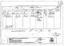
John William Eamer - Birth Certificate
Birth Certificate of Johann Wilhelm Gade/Inglis - 1st May,1879 Mt Remarkable, South AustraliaGender Male Historical Meekatharra, Western Australia, Australia has a street named after him 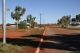
Eamer Street, Meekatharra
Meekatharra Shire named a street after John in honour of the services he gave the community as a member of the Roads Board from 1918-1925Occupation - Cartage Contractor / Manager " Eve's Store", Meekatharra, W.A.
Residence - 71 Williams Road, Nedlands, Western Australia
Places/Nedlands_71WilliamsRd2008.JPG
Residence: Mr&Mrs JWEamer 1948-1958Unique Id 89BA70A8375848AC89C8B9F0A74BDF4DF6A4 Died 11 Jun 1955 Perth, Western Australia, Australia [2] 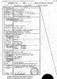
John William Eamer - Death Cerificate
Death Certificate of JWEamer, born as JWGade/InglisBuried Karrakatta, Western Australia, Australia [3] Person ID I530 Tree One Last Modified 24 Oct 2008
Father INGLIS, Samuel, b. 14 Jun 1855, Encounter Bay, South Australia, Australia , d. 7 Jun 1941, Merriton, South Australia, Australia (Age 85 years) Mother GADE, Marie, b. 1859, Germany , d. 13 Dec 1939, Bayswater, Western Australia, Australia (Age 80 years) Family ID F124 Group Sheet | Family Chart
Family WILLOWS, Lucy, b. 14 Aug 1882, Bendigo, Victoria, Australia , d. 18 Aug 1958, Nedlands, Western Australia, Australia (Age 76 years) Married 31 Jul 1905 Nannine, Western Australia, Australia 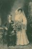
Nannine, Western Australia
Wedding: Nannine, Western Australia - 31st July 1905Children + 1. EAMER, Arthur Ernest, b. 30 Apr 1906, Western Australia, Australia , d. 9 Aug 1975, Morely, Western Australia, Australia (Age 69 years)+ 2. EAMER, Jack, b. 30 Aug 1910, Nannine, Western Australia, Australia , d. 16 Nov 1977, Midland Junction, Western Australia, Australia (Age 67 years) [Birth]+ 3. EAMER, Lucy Addis, b. 31 May 1915, Meekatharra, Western Australia, Australia , d. 8 Apr 2000, Bassendean, Western Australia, Australia (Age 84 years)+ 4. EAMER, Dorothy, b. 9 Jan 1923, Perth, Western Australia, Australia , d. 09 Sep 2010, Perth, Western Australia, Australia (Age 87 years)Last Modified 24 Oct 2008 Family ID F130 Group Sheet | Family Chart
-
Event Map  = Link to Google Earth
= Link to Google Earth Pin Legend  : Address
: Address
 : Location
: Location
 : City/Town
: City/Town
 : County/Shire
: County/Shire
 : State/Province
: State/Province
 : Country
: Country
 : Not Set
: Not Set
-
Photos JW
Taken Meekatharra, WA - 1906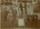
Me on the far right
Taken outside the Meekatharra Roads Board Office, c.1905
12 Helena St, Midland Junction, West Australia
Location of McGregor's Transport Company and family home of two generations of the EAMER family.John William Eamer and Lucy Willows
Wedding: Nannine, Western Australia - 31st July 1905JW
Taken Meekatharra, WA - 1925
McGregors's Transport Company
Taken from the railway reserve across from McGregor's Transport, 12 Helena St., Midland. 1964
Notices 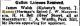
John William Eamer
Gallon Licence renewal for Herman's Store - Telegraph: Dec, 1919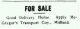
McGregor's Transport
Horse For Sale .. making way for the new technology of Motor Lorries!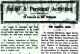
John William Eamer
Returning from a solo holiday! - Swan Express: Dec, 1933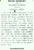
McGregor's Transport
Advertising the business changing hands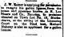
John William Eamer
Notice of issue of Liquor Licence for Hermans Store Meekatharra - Dec, 1911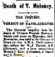
John William Eamer
Called for Jury Duty .. Meekatharra Minor: Nov, 1925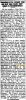
John William Eamer
Presentation of 'Coffee Service Silverware' to John William for 16 yrs of service to the Meekatharra Roads Board. Acceptance speach by his wife Lucy Willows. Reported in the Mullewa Mail 18/04/1929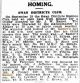
John William Eamer
was involved in racing homing pigeons - West Australian: Oct 1938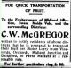
McGregor's Transport
Drumming up business - Swan Express: Nov, 1922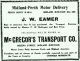
McGregor's Transport
Notification of change of ownership into the Eamer family.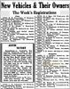
McGregor's Transport
Purchase of a new Ford Motor Lorry - Sunday Times: Oct 1937
-
Notes - Born out of wedlock to Samuel INGLIS. Took on the name of EAMER following the marraige of his mother to Walter EAMER, his stepfather, when he was 3yr6mo old.
See INGLIS
NOTES by Denis Hamilton
===================
Johann was known as John or Jack EAMER. He was Base Born to Maria. The South Australian Reference for the Birth is:- Johann Wilhelm GADE born Thursday 1st May 1879 at Willowie,District of Frome, SA#220/226 Father: Samuel INGLES, Farmer [Info received from Jo HARRIS from Australia on the 1.10.2004 by E Mail to be found in EAMOUR File]. I have entered Johann under Walter EAMER for convenience sake and the fact that Walter "adopted" him and brought him up and he took [or was given] the EAMER name. So all the descendants of Johann/John have not the EAMER blood in them.NOTE: Dr. John JENNINGS informed me that the date of birth was the 1 May 1880. [E Mail rec. 12.1.2004].17.2.2006: John EAMER has the birth date as the 1st May 1879. John has found that the INGLIS/INGLES lineage comes from Duns, Boarders, Scotland. [S.O.G. has Duns under Berwickshire]. Samuel INGLIS dumped Marie [Mary] and married Ruth Elizabeth FOOTE when his mother was three months pregnant. Samuel who lived from 1802 to 1890 arrived in Port Adelaide, Australia in 1854. [There is an INGLIS Clan Group at Yahoo! On Line].
Johann [John] lived in S.A. 18 years and in W.A. 58 years.
Received the "INGLIS FAMILY HISTORY" book Compiled by Jean WILSON on the 4th April 2006 from John Geoffrey EAMER, Australia. Printed in 1983 - does not include Johann, as the writer until eighteen months ago [approx Sept 2004] did not know that Johann existed until John Geoffrey EAMER contacted [Edith] Jean WILSON [nee. INGLIS].
- Born out of wedlock to Samuel INGLIS. Took on the name of EAMER following the marraige of his mother to Walter EAMER, his stepfather, when he was 3yr6mo old.
-
Sources - [S6] Digger - SA Births, McBeath Geanological Services Pty Ltd, (South Australian Genealogical and Hearaldry Society Inc [SAGHS] 1998).
Digger - South Australian Births 1842-1906 (c) SAGHS
------------------
Surname: GADE
Given Names: Johann Wilhelm
Date: 1879-05-01
Sex: M
Father: Samuel INGLES
Mother: Marie GADE
Birth Place/Residence: Willowie
District Code: Fro
Symbol: X
Book: 220
Page: 226
Cross Reference: See also: INGLES Johann Wilhelm - [S4] BDM - WA.
Death Certificate Details Name John William EAMER Profession Retired Carrier Residence 71 Williams Road, Nedlands, WA Sex Male Age 76 years When Saturday, 11th June 1955 Place Royal Perth Hospital, Perth WA Cause Myocardial Infarction, Atheroma, Bronchopneumonia, Uremia Place of Birth Mount Remarkable, South Australia Years in States South Australia - 18 yrs; Western Australia - 58 yrs Father Walter EAMER, Teamster Mother Mary GADE Married Nannine, WA; 31st July, 1905 Married to Lucy WILLOWS Children Arthur E. 49yrs Jack 44 yrs Lucy A. 40 yrs Dorothy 32 yrs Buried Crematorium, Karrakatta, WA Informant William Snell, Funeral Director, 2-4 The Crescent, Midland WA Registered Reg No: 1367; 20/06/1955; Perth District of Western Australia Registrar C.N.A Taylor
NOTE of TRIVIA:
John William EAMER;
Born: Thursday, 1st May 1879 in Mt Remarkable, South Australia
Died: Saturday, 11th June 1955 in Perth, Western Australia
Days Lived; 27,800
Albert EINSTEIN;
Born: Friday, 14th March 1879 in Ulm, Württemberg, Germany
Died: Monday, 18th April 1955 in Princeton, New Jersey, USA
Days Lived; 27,793 - [S3] Cemetery - Karrakatta, Government of Western Australia.
First Names Last Name Application Number
JOHN WILLIAM EAMER KC00009665
Aged (Years) Date of Death Suburb
76 11/06/1955 NEDLANDS
Ashes Request
DISPERSED AT KARRAKATTA
- [S6] Digger - SA Births, McBeath Geanological Services Pty Ltd, (South Australian Genealogical and Hearaldry Society Inc [SAGHS] 1998).